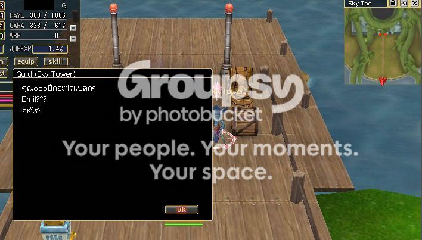

เกี่ยวกับ WaterLayer
พอดีวันนี้เอาตัวละครที่เคยผ่านเควสใน water layer กลับเข้าไปอีกที
มันเข้าไม่ได้น่ะค่ะ ติดตรงนางเงือกที่เฝ้าประตูบ้านบินน่ะค่ะ
ตามภาพเลย
เลยไม่รู้ว่าติดอะไรตรงไหน
เพราะตัวละครตัวนี้เป็นตัวที่ไม่ได้ผ่านเควสมังกรโดยตรง
แต่เป็นตัวละครที่มีไอดีร่วมกับตัวที่ผ่านเควสมาค่ะ
และ ตัวละครตัวนี้ทำเควสเข้า-ออกในนั้นแล้ว ก็เข้าออกปกติดี...จนมาวันนี้แหละ ไปไม่ได้
พอดีไม่ได้เล่นนาน เลยไม่รู้ว่าไปติคเควสอะไรอีก
มันเข้าไม่ได้น่ะค่ะ ติดตรงนางเงือกที่เฝ้าประตูบ้านบินน่ะค่ะ
ตามภาพเลย

เลยไม่รู้ว่าติดอะไรตรงไหน
เพราะตัวละครตัวนี้เป็นตัวที่ไม่ได้ผ่านเควสมังกรโดยตรง
แต่เป็นตัวละครที่มีไอดีร่วมกับตัวที่ผ่านเควสมาค่ะ
และ ตัวละครตัวนี้ทำเควสเข้า-ออกในนั้นแล้ว ก็เข้าออกปกติดี...จนมาวันนี้แหละ ไปไม่ได้
พอดีไม่ได้เล่นนาน เลยไม่รู้ว่าไปติคเควสอะไรอีก